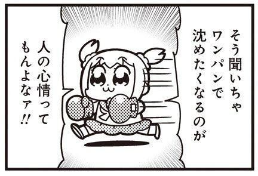

Can we pretend that airplanes in the night sky Are like shooting stars? I could really use a wish right now Wish right now, wish right now Can we pretend that airplanes in the night sky Are like shooting stars? I could really use a wish right now Wish right now, wish right now Yeah I could use a dream or a genie or a wish To go back to a place much simpler than in this 'Cause after all the partyin', and smashin', and crashin' And all the glitz, and the glam, and the fashion And all the pandemonium, and all the madness There comes a time where you fade to the blackness And when you starin' at that phone in your lap And you hopin', but them people never call you back But that's just how the story unfolds You get another hand soon after you fold And when your plans unravel in the sand What would you wish for if you had one chance? So airplane, airplane, sorry I'm late I'm on my way, so don't close that gate If I don't make that, then I'll switch my flight And I'll be right back at it by the end of the night
